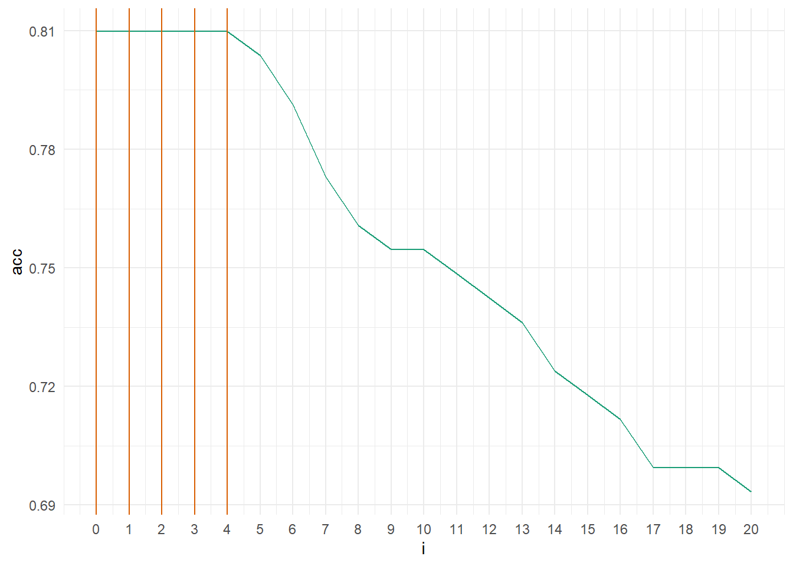
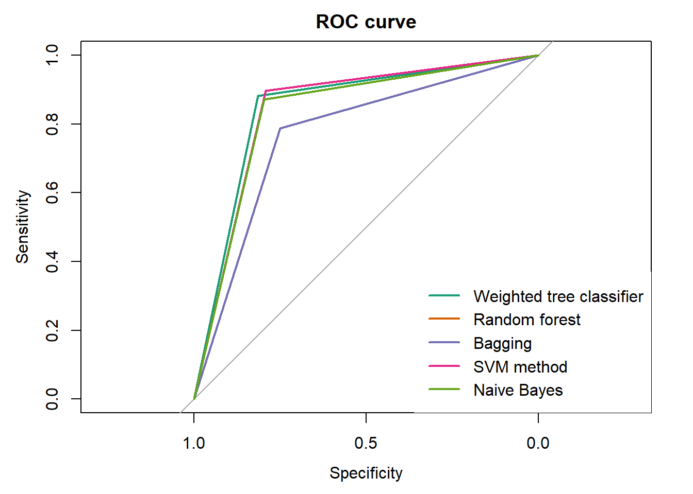

Loan Prediction analysis
1. Data cleaning
library(readr)
library(dplyr)
library(zoo)
library(forcats) # adding a new value to the categorical variableLoading train and test datasets
Quick examination of data
summary(loan.train)## Loan_ID Gender Married Dependents
## Length:614 Male :489 Yes :398 0 :345
## Class :character Female :112 No :213 1 :102
## Mode :character Missing: 0 Missing: 0 2 :101
## NA's : 13 NA's : 3 3+ : 51
## Missing: 0
## NA's : 15
##
## Education Self_Employed ApplicantIncome CoapplicantIncome
## Graduate :480 No :500 Min. : 150 Min. : 0
## Not Graduate:134 Yes : 82 1st Qu.: 2878 1st Qu.: 0
## Missing : 0 Missing: 0 Median : 3812 Median : 1188
## NA's : 32 Mean : 5403 Mean : 1621
## 3rd Qu.: 5795 3rd Qu.: 2297
## Max. :81000 Max. :41667
##
## LoanAmount Loan_Amount_Term Credit_History Property_Area Loan_Status
## Min. : 9.0 360 :512 0 : 89 Urban :202 Y:422
## 1st Qu.:100.0 180 : 44 1 :475 Semiurban:233 N:192
## Median :128.0 480 : 15 Missing: 0 Rural :179
## Mean :146.4 300 : 13 NA's : 50 Missing : 0
## 3rd Qu.:168.0 84 : 4
## Max. :700.0 (Other): 12
## NA's :22 NA's : 14Loan_ID column is useless for analysis and will confuse our model. NA values in catogical variables will be clasified as new factor Missing. Only continuous variable with NA is LoanAmount, and these values will be replaced with mean of this column.
loan.train <- select(loan.train, -1) loan.train$Gender <- fct_explicit_na(loan.train$Gender, na_level = 'Missing')
loan.train$Married <- fct_explicit_na(loan.train$Married, na_level = 'Missing')
loan.train$Dependents <- fct_explicit_na(loan.train$Dependents, na_level = 'Missing')
loan.train$Education <- fct_explicit_na(loan.train$Education, na_level = 'Missing')
loan.train$Self_Employed <- fct_explicit_na(loan.train$Self_Employed, na_level = 'Missing')
loan.train$Loan_Amount_Term <- fct_explicit_na(loan.train$Loan_Amount_Term, na_level = 'Missing')
loan.train$Credit_History <- fct_explicit_na(loan.train$Credit_History, na_level = 'Missing')
loan.train$Property_Area <- fct_explicit_na(loan.train$Property_Area, na_level = 'Missing')
loan.train$LoanAmount <- na.aggregate(loan.train$LoanAmount)
loan.test$Gender <- fct_explicit_na(loan.test$Gender, na_level = 'Missing')
loan.test$Married <- fct_explicit_na(loan.test$Married, na_level = 'Missing')
loan.test$Dependents <- fct_explicit_na(loan.test$Dependents, na_level = 'Missing')
loan.test$Education <- fct_explicit_na(loan.test$Education, na_level = 'Missing')
loan.test$Self_Employed <- fct_explicit_na(loan.test$Self_Employed, na_level = 'Missing')
loan.test$Loan_Amount_Term <- fct_explicit_na(loan.test$Loan_Amount_Term, na_level = 'Missing')
loan.test$Credit_History <- fct_explicit_na(loan.test$Credit_History, na_level = 'Missing')
loan.test$Property_Area <- fct_explicit_na(loan.test$Property_Area, na_level = 'Missing')
loan.test$LoanAmount <- na.aggregate(loan.test$LoanAmount)2. Visualisation and overview data by ggplot2 package.
I have loaded the data and set column types as below ## Description of variables I have loaded the data and set column types as below
- Gender: dichotomous variable -
male,female - Married : dichotomous variable -
Y,N - Dependents : categorical variable - number of dependents
0,1,2,+3 - Education : categorical variable -
Graduate,Not Graduate - Self_Employed : dichotomous variable -
Y,N - ApplicantIncome : continuous variable - applicant income
- CoapplicantIncome : continuous variable - coapplicant income
- LoanAmount : continuous variable - amount of loan
- Loan_Amount_Term: categorical variable - term of loan in months
6,12,36,60,84,120,180,240,300,350,360,480 - Credit_History : dichotomous variable - credit history meets guidelines
1Yes,0No - Property_Area : categorical variable -
Urban,Semi Urban,Rural - Loan_Status : explained dichotomous variable loan approved
Y,N
Again summary of train dataset
summary(loan.train)## Gender Married Dependents Education Self_Employed
## Male :489 Yes :398 0 :345 Graduate :480 No :500
## Female :112 No :213 1 :102 Not Graduate:134 Yes : 82
## Missing: 13 Missing: 3 2 :101 Missing : 0 Missing: 32
## 3+ : 51
## Missing: 15
##
##
## ApplicantIncome CoapplicantIncome LoanAmount Loan_Amount_Term
## Min. : 150 Min. : 0 Min. : 9.0 360 :512
## 1st Qu.: 2878 1st Qu.: 0 1st Qu.:100.2 180 : 44
## Median : 3812 Median : 1188 Median :129.0 480 : 15
## Mean : 5403 Mean : 1621 Mean :146.4 Missing: 14
## 3rd Qu.: 5795 3rd Qu.: 2297 3rd Qu.:164.8 300 : 13
## Max. :81000 Max. :41667 Max. :700.0 84 : 4
## (Other): 12
## Credit_History Property_Area Loan_Status
## 0 : 89 Urban :202 Y:422
## 1 :475 Semiurban:233 N:192
## Missing: 50 Rural :179
## Missing : 0
##
##
## Creating simple plots for review
library(ggplot2)


Conclusion
Shown plots show that variables will not differentiate the matter of granting a loan. Although variables such as the number of dependents, area of the property and certainly if credit history met guidelines can be statistically significant.
3. Analysis
library(caret) # confusion matrixDivison of the dataset into train and test parts (3:1 ratio)
set.seed(1998) # seed for repeated values
divide = sample(2, nrow(loan.train), replace = TRUE, prob = c(0.75, 0.25))
loan.train.train <- loan.train[divide == 1, ]
loan.train.test <- loan.train[divide == 2, ] Tree clasification
library(party) # tree clasification and random forrestsFirstly I’m checking score for single tree classification on the test dataset.
tree <- ctree(Loan_Status ~ ., data = loan.train.train)
plot(tree)
confusionMatrix(predict(tree), loan.train.train$Loan_Status, positive = "Y")## Confusion Matrix and Statistics
##
## Reference
## Prediction Y N
## Y 309 82
## N 4 56
##
## Accuracy : 0.8093
## 95% CI : (0.77, 0.8445)
## No Information Rate : 0.694
## P-Value [Acc > NIR] : 2.004e-08
##
## Kappa : 0.4668
##
## Mcnemar's Test P-Value : < 2.2e-16
##
## Sensitivity : 0.9872
## Specificity : 0.4058
## Pos Pred Value : 0.7903
## Neg Pred Value : 0.9333
## Prevalence : 0.6940
## Detection Rate : 0.6851
## Detection Prevalence : 0.8670
## Balanced Accuracy : 0.6965
##
## 'Positive' Class : Y
## Single tree not surprisingly indicates that Credit_History is the main factor when predicting. Applicants with positive result 1 or NA as Missing values were granted a mortgage. 80.9% accuracy is not a bad score, but for train set it could be much better.
Test dataset
pred_tree = predict(tree, newdata = loan.train.test)
confusionMatrix(pred_tree, loan.train.test$Loan_Status, positive = "Y") ## Confusion Matrix and Statistics
##
## Reference
## Prediction Y N
## Y 106 28
## N 3 26
##
## Accuracy : 0.8098
## 95% CI : (0.741, 0.867)
## No Information Rate : 0.6687
## P-Value [Acc > NIR] : 4.578e-05
##
## Kappa : 0.514
##
## Mcnemar's Test P-Value : 1.629e-05
##
## Sensitivity : 0.9725
## Specificity : 0.4815
## Pos Pred Value : 0.7910
## Neg Pred Value : 0.8966
## Prevalence : 0.6687
## Detection Rate : 0.6503
## Detection Prevalence : 0.8221
## Balanced Accuracy : 0.7270
##
## 'Positive' Class : Y
## Score on test dataset is the same, as on training. What is worth mentioning is that sensitivity is close to 97%, but specificity is unacceptably low. After all bank probably ‘prefers’ to not grant a loan to a person who could afford it and lose earning opportunity, than granting it to a person who will not pay instalments and the company will lose actual money. In that case, I think it would be good to try the weighted version of tree classification.
For future analysis, I’ve created a function which will help to track scores and iterations.
test_score <- function(x, loop = FALSE) {
if (loop == TRUE) {
pred_x <- predict(x, newdata = loan.train.test)
cf.2 <- confusionMatrix(pred_x, loan.train.test$Loan_Status, positive = "Y")
score <- (data.frame(acc = cf.2$overall[['Accuracy']],
sens = cf.2$byClass[['Sensitivity']],
spec = cf.2$byClass[['Specificity']],
i = i,
j = j))}
if (loop == FALSE) {
pred_x <- predict(x, newdata = loan.train.test)
cf.2 <- confusionMatrix(pred_x, loan.train.test$Loan_Status, positive = "Y")
score <- (data.frame(acc = cf.2$overall[['Accuracy']],
sens = cf.2$byClass[['Sensitivity']],
spec = cf.2$byClass[['Specificity']]))
}
return(score)
}It tracks accuracy, sensitivity, specificity and i and j weight parameters (if needed) for test dataset.
Combination of weighted errors (from 1 to 10)
df <- data.frame(acc = NULL,sens = NULL,spec = NULL, i = NULL,j = NULL) #empty dataframe
for (i in 1:20) {
for (j in 1:20) {
tree_w <- ctree(Loan_Status ~ ., data = loan.train.train, weights = ifelse(loan.train.train$Loan_Status == 'Y', i, j))
df <- rbind(df,test_score(tree_w, loop = TRUE))
}
}
df[df$acc == max(df$acc),] # show rows only with the best score## acc sens spec i j
## 44 0.8282209 0.9633028 0.5555556 3 4tree_w <- ctree(Loan_Status ~ ., data = loan.train.train, weights = ifelse(loan.train.train$Loan_Status == 'Y', 3, 4))
pred_tree_w <- predict(tree_w, newdata = loan.train.test)
confusionMatrix(pred_tree_w, loan.train.test$Loan_Status, positive = "Y")## Confusion Matrix and Statistics
##
## Reference
## Prediction Y N
## Y 105 24
## N 4 30
##
## Accuracy : 0.8282
## 95% CI : (0.7614, 0.8827)
## No Information Rate : 0.6687
## P-Value [Acc > NIR] : 3.854e-06
##
## Kappa : 0.5723
##
## Mcnemar's Test P-Value : 0.0003298
##
## Sensitivity : 0.9633
## Specificity : 0.5556
## Pos Pred Value : 0.8140
## Neg Pred Value : 0.8824
## Prevalence : 0.6687
## Detection Rate : 0.6442
## Detection Prevalence : 0.7914
## Balanced Accuracy : 0.7594
##
## 'Positive' Class : Y
## As we can see weighted errors helped (for the error pair 3, 4). The total outcome increased by almost 2 points in comparison to the first attempt. Even more important is that specificity developed to the level of 55%. It is still disappointing but better that it was before. Mcnemar’s test only confirms my theory that the difference between sensitivity and specificity is statistically significant. (p-value < \(\alpha\)) ## Random forests
Training dataset, the number of trees is set to 200.
forest <- cforest(Loan_Status ~ ., data = loan.train.train, control = cforest_unbiased(ntree = 200))
confusionMatrix(predict(forest), loan.train.train$Loan_Status)## Confusion Matrix and Statistics
##
## Reference
## Prediction Y N
## Y 309 82
## N 4 56
##
## Accuracy : 0.8093
## 95% CI : (0.77, 0.8445)
## No Information Rate : 0.694
## P-Value [Acc > NIR] : 2.004e-08
##
## Kappa : 0.4668
##
## Mcnemar's Test P-Value : < 2.2e-16
##
## Sensitivity : 0.9872
## Specificity : 0.4058
## Pos Pred Value : 0.7903
## Neg Pred Value : 0.9333
## Prevalence : 0.6940
## Detection Rate : 0.6851
## Detection Prevalence : 0.8670
## Balanced Accuracy : 0.6965
##
## 'Positive' Class : Y
## Test dataset
pred_forest = predict(forest, newdata = loan.train.test)
confusionMatrix(pred_forest, loan.train.test$Loan_Status, positive = "Y") ## Confusion Matrix and Statistics
##
## Reference
## Prediction Y N
## Y 106 28
## N 3 26
##
## Accuracy : 0.8098
## 95% CI : (0.741, 0.867)
## No Information Rate : 0.6687
## P-Value [Acc > NIR] : 4.578e-05
##
## Kappa : 0.514
##
## Mcnemar's Test P-Value : 1.629e-05
##
## Sensitivity : 0.9725
## Specificity : 0.4815
## Pos Pred Value : 0.7910
## Neg Pred Value : 0.8966
## Prevalence : 0.6687
## Detection Rate : 0.6503
## Detection Prevalence : 0.8221
## Balanced Accuracy : 0.7270
##
## 'Positive' Class : Y
## Combination of weighted errors (from 1 to 10)
df <- data.frame(acc = NULL,sens = NULL,spec = NULL, i = NULL,j = NULL)
for (i in 1:10) {
for (j in 1:10) {
forest_w <- cforest(Loan_Status ~ ., data = loan.train.train, control = cforest_unbiased(ntree = 200), weights = ifelse(loan.train.train$Loan_Status == 'Y', i, j))
df <- rbind(df, test_score(forest_w, TRUE))
}
}
head(df[df$acc == max(df$acc),])## acc sens spec i j
## 1 0.809816 0.9724771 0.4814815 1 1
## 2 0.809816 0.9724771 0.4814815 1 2
## 3 0.809816 0.9724771 0.4814815 1 3
## 4 0.809816 0.9724771 0.4814815 1 4
## 5 0.809816 0.9724771 0.4814815 1 5
## 6 0.809816 0.9724771 0.4814815 1 6forest_w <- cforest(Loan_Status ~ ., data = loan.train.train, control = cforest_unbiased(ntree = 200), weights = ifelse(loan.train.train$Loan_Status == 'Y', 1, 8))
pred_forest_w = predict(forest_w, newdata = loan.train.test)
confusionMatrix(pred_forest_w, loan.train.test$Loan_Status, positive = "Y") ## Confusion Matrix and Statistics
##
## Reference
## Prediction Y N
## Y 106 28
## N 3 26
##
## Accuracy : 0.8098
## 95% CI : (0.741, 0.867)
## No Information Rate : 0.6687
## P-Value [Acc > NIR] : 4.578e-05
##
## Kappa : 0.514
##
## Mcnemar's Test P-Value : 1.629e-05
##
## Sensitivity : 0.9725
## Specificity : 0.4815
## Pos Pred Value : 0.7910
## Neg Pred Value : 0.8966
## Prevalence : 0.6687
## Detection Rate : 0.6503
## Detection Prevalence : 0.8221
## Balanced Accuracy : 0.7270
##
## 'Positive' Class : Y
## test_score(forest_w)## acc sens spec
## 1 0.809816 0.9724771 0.4814815In this particular case the result is identical as the one without weights. It is useless to add error weights.
Bagging (Bootstrap aggregation)
library(ipred)bag <- bagging(Loan_Status ~ ., data = loan.train.train, nbagg = 2000)
pred_bag <- predict(bag, newdata = loan.train.test)
confusionMatrix(pred_bag, loan.train.test$Loan_Status, positive = "Y")## Confusion Matrix and Statistics
##
## Reference
## Prediction Y N
## Y 99 28
## N 10 26
##
## Accuracy : 0.7669
## 95% CI : (0.6943, 0.8294)
## No Information Rate : 0.6687
## P-Value [Acc > NIR] : 0.004083
##
## Kappa : 0.4255
##
## Mcnemar's Test P-Value : 0.005820
##
## Sensitivity : 0.9083
## Specificity : 0.4815
## Pos Pred Value : 0.7795
## Neg Pred Value : 0.7222
## Prevalence : 0.6687
## Detection Rate : 0.6074
## Detection Prevalence : 0.7791
## Balanced Accuracy : 0.6949
##
## 'Positive' Class : Y
## Bagging with OOB (out of box) error
bag2 <- bagging(Loan_Status ~ ., data = loan.train.train, coob = TRUE, nbagg = 2000)
pred_bag2 <- predict(bag2, newdata = loan.train.test)
confusionMatrix(pred_bag2, loan.train.test$Loan_Status, positive = "Y")## Confusion Matrix and Statistics
##
## Reference
## Prediction Y N
## Y 100 27
## N 9 27
##
## Accuracy : 0.7791
## 95% CI : (0.7076, 0.8403)
## No Information Rate : 0.6687
## P-Value [Acc > NIR] : 0.001343
##
## Kappa : 0.4558
##
## Mcnemar's Test P-Value : 0.004607
##
## Sensitivity : 0.9174
## Specificity : 0.5000
## Pos Pred Value : 0.7874
## Neg Pred Value : 0.7500
## Prevalence : 0.6687
## Detection Rate : 0.6135
## Detection Prevalence : 0.7791
## Balanced Accuracy : 0.7087
##
## 'Positive' Class : Y
## Bagging with out of box estimator achieves better score, thus that version will be used in further analysis.
Support Vector Machine
There are two SVM methods additional with three kernels for classification problems. The most popular kernel to use is the radial kernel but now I’m going to find the best combination for our particular case.
library(e1071)cc1 <- svm(Loan_Status ~ ., data = loan.train.train, type = 'C-classification', kernel = "radial")
cc2 <- svm(Loan_Status ~ ., data = loan.train.train, type = 'C-classification', kernel = "sigmoid")
cc3 <- svm(Loan_Status ~ ., data = loan.train.train, type = 'C-classification', kernel = "polynomial")
test_score(cc1)## acc sens spec
## 1 0.7484663 0.8623853 0.5185185test_score(cc2)## acc sens spec
## 1 0.803681 0.9633028 0.4814815test_score(cc3)## acc sens spec
## 1 0.6687117 1 0Best score for classification SVM type 1 (C-classification) on test dataset achieves sigmoid kernel.
Now the check of the SVM type 2. The difference in types is between what error function the algorithm is minimizing.
nuc1 <- svm(Loan_Status ~ ., data = loan.train.train, type = 'nu-classification', kernel = "radial")
nuc2 <- svm(Loan_Status ~ ., data = loan.train.train, type = 'nu-classification', kernel = "sigmoid")
nuc3 <- svm(Loan_Status ~ ., data = loan.train.train, type = 'nu-classification', kernel = "polynomial")
test_score(nuc1)## acc sens spec
## 1 0.809816 0.9724771 0.4814815test_score(nuc2)## acc sens spec
## 1 0.803681 0.9541284 0.5test_score(nuc3)## acc sens spec
## 1 0.7852761 0.9266055 0.5Best score for classification SVM type 2 (nu-classification) on test dataset achieves radial kernel. Nu classification has slightly better accuracy therefore it is the choice for test dataset from this classificator.
pred_svm <- predict(nuc1, newdata = loan.train.test)
confusionMatrix(pred_svm, loan.train.test$Loan_Status, positive = "Y")## Confusion Matrix and Statistics
##
## Reference
## Prediction Y N
## Y 106 28
## N 3 26
##
## Accuracy : 0.8098
## 95% CI : (0.741, 0.867)
## No Information Rate : 0.6687
## P-Value [Acc > NIR] : 4.578e-05
##
## Kappa : 0.514
##
## Mcnemar's Test P-Value : 1.629e-05
##
## Sensitivity : 0.9725
## Specificity : 0.4815
## Pos Pred Value : 0.7910
## Neg Pred Value : 0.8966
## Prevalence : 0.6687
## Detection Rate : 0.6503
## Detection Prevalence : 0.8221
## Balanced Accuracy : 0.7270
##
## 'Positive' Class : Y
## Naive Bayes Classifier
library(e1071)bayes <- naiveBayes(Loan_Status ~ ., data = loan.train.train)
test_score(bayes)## acc sens spec
## 1 0.809816 0.9633028 0.5naiveBayes function allows us to set up the Laplace correction. In the simple loop, I’ll check which value if any suits our model.
df <- data.frame(acc = NULL,sens = NULL,spec = NULL, i = NULL,j = NULL)
for (i in 0:20) {
bay <- naiveBayes(Loan_Status ~ ., data = loan.train.train, laplace = i)
df <- rbind(df, test_score(bay, TRUE))
}
ggplot(df, aes(x = i, y = acc)) +
geom_line(color = '#1B9E77') +
theme_minimal() +
scale_x_continuous(breaks = c(0:20)) +
geom_vline(xintercept = df[df$acc == max(df$acc),]$i, lty = 1, color = "#D95F02")
From the plot can be noticed a tendency that adding more corrections only weakens the accuracy of the model. The best decision, in this case, is not adding Laplace correction.
bayes <- naiveBayes(Loan_Status ~ ., data = loan.train.train)
pred_bayes <- predict(bayes, newdata = loan.train.test)
confusionMatrix(pred_bayes, loan.train.test$Loan_Status, positive = "Y")## Confusion Matrix and Statistics
##
## Reference
## Prediction Y N
## Y 105 27
## N 4 27
##
## Accuracy : 0.8098
## 95% CI : (0.741, 0.867)
## No Information Rate : 0.6687
## P-Value [Acc > NIR] : 4.578e-05
##
## Kappa : 0.5191
##
## Mcnemar's Test P-Value : 7.772e-05
##
## Sensitivity : 0.9633
## Specificity : 0.5000
## Pos Pred Value : 0.7955
## Neg Pred Value : 0.8710
## Prevalence : 0.6687
## Detection Rate : 0.6442
## Detection Prevalence : 0.8098
## Balanced Accuracy : 0.7317
##
## 'Positive' Class : Y
## 4. Results
ROC curves
library(pROC)##
## Call:
## roc.default(response = as.ordered(pred_forest), predictor = as.ordered(loan.train.test$Loan_Status), plot = TRUE, add = TRUE, col = "#D95F02")
##
## Data: as.ordered(loan.train.test$Loan_Status) in 134 controls (as.ordered(pred_forest) Y) < 29 cases (as.ordered(pred_forest) N).
## Area under the curve: 0.8438##
## Call:
## roc.default(response = as.ordered(pred_bag2), predictor = as.ordered(loan.train.test$Loan_Status), plot = TRUE, add = TRUE, col = "#7570B3")
##
## Data: as.ordered(loan.train.test$Loan_Status) in 36 controls (as.ordered(pred_bag2) N) > 127 cases (as.ordered(pred_bag2) Y).
## Area under the curve: 0.7687##
## Call:
## roc.default(response = as.ordered(pred_svm), predictor = as.ordered(loan.train.test$Loan_Status), plot = TRUE, add = TRUE, col = "#E7298A")
##
## Data: as.ordered(loan.train.test$Loan_Status) in 134 controls (as.ordered(pred_svm) Y) < 29 cases (as.ordered(pred_svm) N).
## Area under the curve: 0.8438##
## Call:
## roc.default(response = as.ordered(pred_bayes), predictor = as.ordered(loan.train.test$Loan_Status), plot = TRUE, add = TRUE, col = "#66A61E")
##
## Data: as.ordered(loan.train.test$Loan_Status) in 132 controls (as.ordered(pred_bayes) Y) < 31 cases (as.ordered(pred_bayes) N).
## Area under the curve: 0.8332
df <- rbind(test_score(tree_w),
test_score(forest),
test_score(bag2),
test_score(nuc1),
test_score(bayes))
df## acc sens spec
## 1 0.8282209 0.9633028 0.5555556
## 2 0.8098160 0.9724771 0.4814815
## 3 0.7791411 0.9174312 0.5000000
## 4 0.8098160 0.9724771 0.4814815
## 5 0.8098160 0.9633028 0.5000000ROC curve, as well as a confusion matrix, indicates that the best classifiers in that analysis is weighted tree classification. Although the predicted dataset is automatically checked on the contest website, so I will compare the results of each of the models.
After finding out the score on real test dataset for each method, the result is a little bit surprising. In the last final data frame, I will present accuracy.
results <- data.frame('Weighted tree classifier' = 0.75, 'Random forest' = 0.78, 'Bagging' = 0.76, 'SVM method' = 0.77, 'Naive Bayes' = 0.75)
results## Weighted.tree.classifier Random.forest Bagging SVM.method Naive.Bayes
## 1 0.75 0.78 0.76 0.77 0.75Random forest managed to get 78% accuracy which was the highest, from all my predictors. In my judgment, that score is not bad if the dataset and case were real. In the contest data as it is here, it could be better. To improve the score NA values could be assigned to existing values, based on other parameters of each observation. Also changing the train:test ratio could enhance the performance.
5. Bibliography and used links
- Educational materials for IT & Econometrics classes at University of Lodz - prof. C. Domański, dr M. Misztal, dr P. Szczepocki
- Statistica software instruction
- R documentation
- AnalyticsVidhya
- STHDA